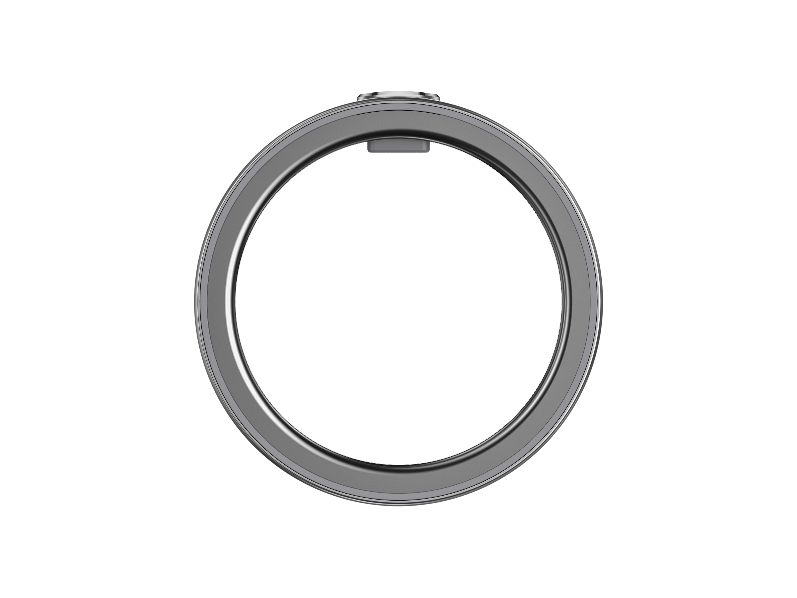
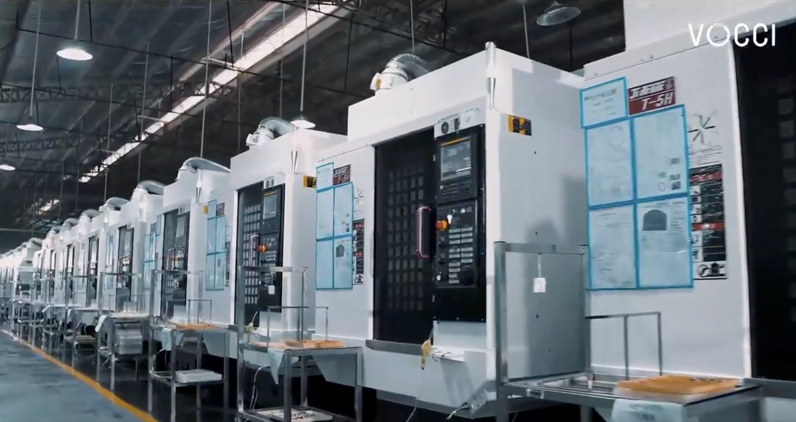
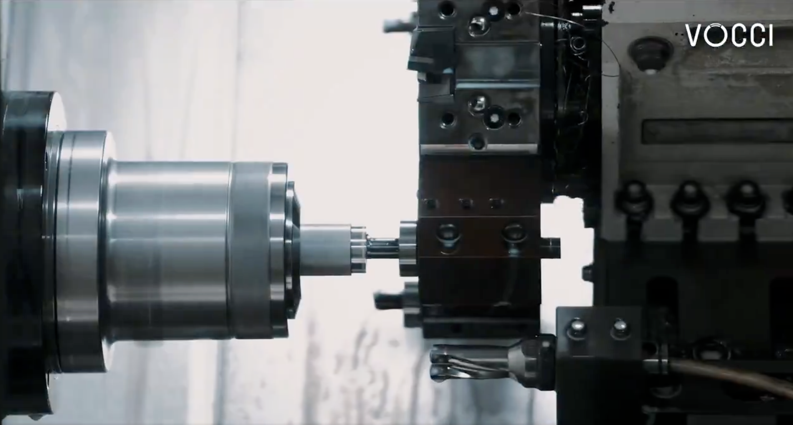
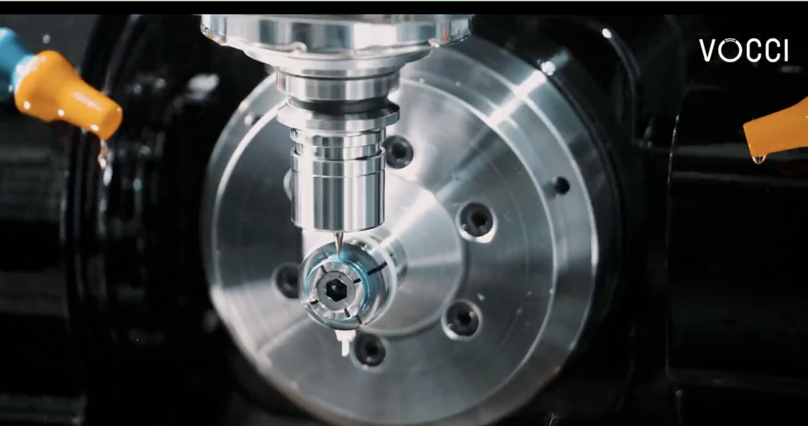
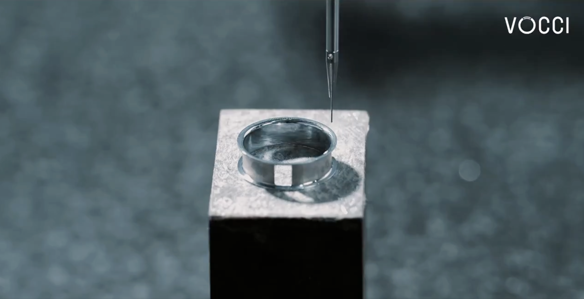
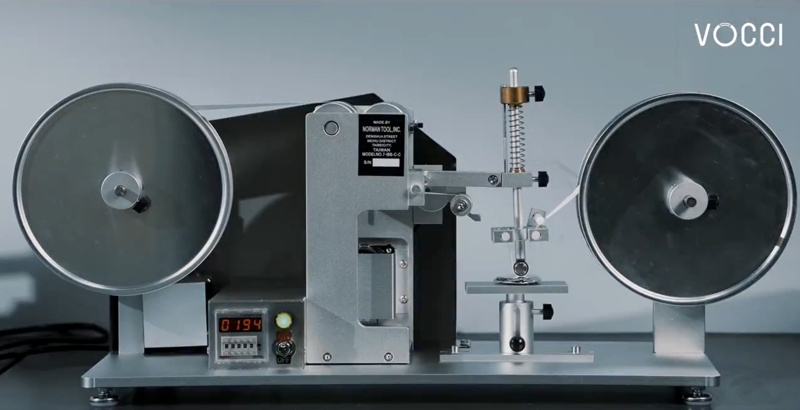

Before
“Let’s compare both concepts on Friday at two.”
AfterCalendar
Concept review
Compare both concepts and agree on the direction.

CCIThe AI wearable built to close the loop between your real life and your AI tool.
Buy NowAlex is preparing a product launch. He meets the client, visits the venue, and discusses the revised proposal over dinner.
“The entrance is narrow, and the setup window is shorter.”
Deliverables · Explicit deadlines · Open questions
Review, add owners, then share.
Press and hold the button on the ring to send a voice command (within 60s).
Message Maya in Slack. Ask her to confirm yesterday’s venue transport dimensions and setup time, and give me an initial assessment this afternoon.
Turn a discussion into decisions, owners and a next step everyone can return to.
“Let’s compare both concepts on Friday at two.”
Compare both concepts and agree on the direction.

Your conversations are the beginning of something useful.
talk face-to-face with the founding team, and receive a special gift
Discord
Explore the engineering that brings recording, storage and connectivity into a ring. Learn more ↗







Vocci is an AI ring for capturing conversations and ideas, then bringing the context you choose into your AI workflow.
Double-click the physical button on the ring to start recording.
Transcripts, summaries and action items help you return to the useful parts of a conversation.
Use selected context with connected tools you authorize. Visit the product site for available integrations and setup details.
The ring uses titanium inside and out and weighs 3–5 g depending on size. Check the product page for fit and care guidance.
Yes. A deliberate action starts recording, so you choose which conversation or thought to keep.
Vocci uses encryption on the device, permission-based access and user-controlled sync. See the Trust Center for current details.
You choose the content to use and authorize access to connected tools.
Visit the Vocci Ring product page for current pricing, availability and sizing.
Read the current shipping policy and return policy on the Vocci store.
Get in touch through the Vocci Support Center.